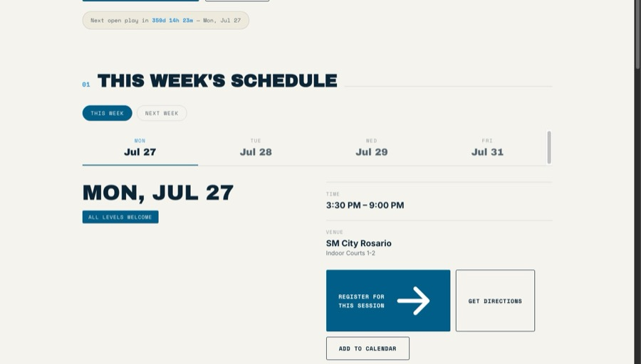
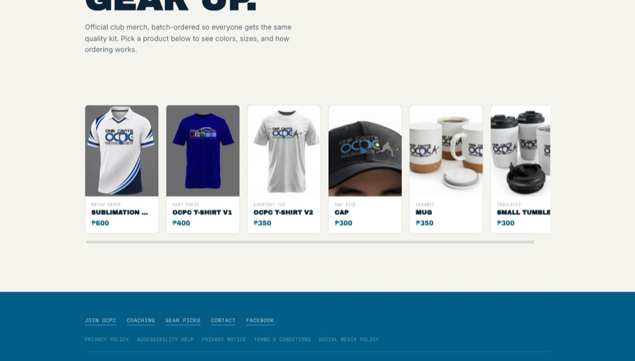
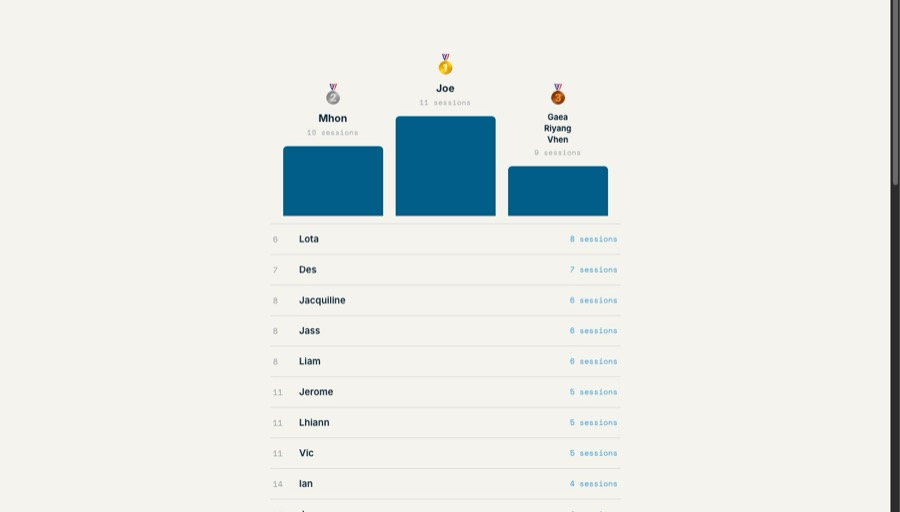

A fast-growing pickleball club in Cavite, Philippines, was running on Google Forms, group chats, and spreadsheets. I designed and built a full web platform to replace all of it — membership, commerce, attendance, and an admin backend the club actually controls.

OCPC started the way most community clubs do — a Facebook group and word of mouth. But as membership grew past 30 active players, the cracks showed:
I approached this exactly like I would a business operations audit — map every real workflow first, then decide what needed automating versus what needed to be built outright.
Google Forms couldn't be configured into what OCPC actually needed. So instead of duct-taping more forms and spreadsheets together, I designed and built a real application: player accounts, a live shop, attendance-driven leaderboards, and an admin dashboard non-technical club officers could run themselves.
Every feature below is live in production — not a prototype.
A live homepage with the week's open-play schedule, a countdown to the next session, a real-time player spotlight pulled from attendance data, and an auto-rotating events section that archives past events by date without any manual editing.
Replaced a single-item Google Form order process with a real cart-based shop: browse products, add multiple items, review the cart, then check out once with cascading Philippine address fields, GCash/bank QR payment, discount codes, and proof-of-payment upload. Every order gets a sequential order number and an automatic email confirmation — and buyers can check payment/fulfillment status themselves without logging in.

Officers log attendance by name; the system ranks the top players over a rolling 4-week window and shows each player their own stats, rank, and how many more sessions they need to move up. Real-world data is messy — people go by nicknames, shortened names, or names that don't match their registered account — so I built a reconciliation system that automatically merges obvious matches and lets admins manually link the rest, without ever touching raw attendance records.

Free self-service signup with optional profile photo, a personal dashboard showing lifetime stats, an 8-week attendance chart, order history, and editable profile details including a preferred nickname — all backed by Firebase Authentication.
A full dashboard for club officers to run everything without ever touching code: order management with payment-proof thumbnails and status controls, coaching request handling, discount code creation, attendance recording, member approval and role management, and a settings panel to toggle a site-wide announcement banner on or off. Every order placed in one checkout is grouped together, so officers can see at a glance which products belong to the same purchase.
No framework overhead, no unnecessary dependencies — chosen for speed to ship and low ongoing cost, the same way I'd choose tools for any operations build.
"The same instinct that fixes a messy sales pipeline is the instinct that fixes a messy club sign-up process — see the real workflow, then build the smallest system that actually works."— James Castillo
Whether that's a properly configured CRM or a fully custom platform like this one — I'll tell you honestly which one it is.
Start the Conversation →